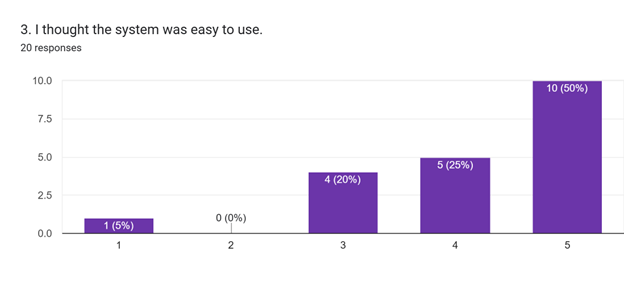
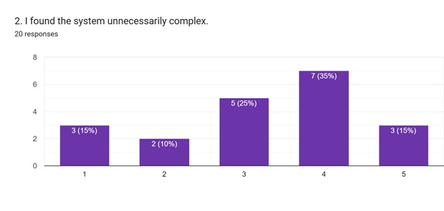
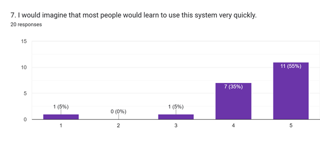

Respondent Profile Summary
50%
Both Male & Female Participants
80%
Prior System Experience
45%
Age Group: 21 Years Old
Usability Scale Analysis

High "Ease of Use" Scores (10/20 rated 5)

Critical Issue: High Complexity Ratings

100% Positive Learnability Projection
Discussion of Findings
The results of the survey conducted among 20 people demonstrate that this system is highly appreciated because of its capacity to introduce "order, transparency, and accountability" into the financial processes within the church organization. Users in different programs (BSMath, BSED, etc.) were confident that the proposed system would facilitate quicker handling of expenses.
Nevertheless, the mean score for Question 2, "Unnecessarily Complex," and Question 8, "Cumbersome," was surprisingly high (3-5). The results suggest that although the system is not difficult to learn, the initial design is quite complex and needs to be technically optimized in order to become an adequate alternative to manual logbooks.
Recommendations
Identified User Issues
- Mobility: Users noted: "since a lot of people are not bringing a laptop in their daily transaction."
- Visuals: Feedback requested: "The design and aesthetics" and "data visualization like charts."
- Guidance: High scores on Q4 suggest users still feel they need technical support initially.
Suggested Improvements
- Mobile Accessibility: Develop a smartphone-compatible interface for immediate field-entry.
- UI Simplification: Reduce the complexity of the ledger input forms to lower the "Cumbersome" rating.
- Automation: Add "automatic expense tracking and budget alerts" as suggested by participants.
Heuristic Workbook
Detailed analysis of Jakob Nielsen’s 10 Usability Heuristics performed by the team.
📄 Download Evaluation Workbook (PDF)